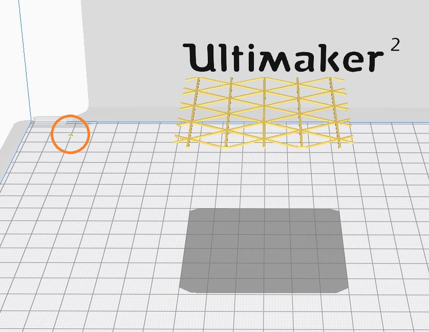

Attempt 2
April 19
My second plan is to 3D print inserts that connect the wooden plates and then close them with a 3D print. I made some first efforts and these seemed to be more promising.


April 22
I increased the hight of the holder, to make the print more stable and had to hack the cura settings. The first closing print, I print a triangle on the printerbed to position the holder, but in the second and third print, I prefer the 3D printer to directly print at the height of the triangle. Cura doesn't like this, so I place a tiny cube in the back, but also have to adjust the positioning in the Gcode to make sure the printerhead pauses above this cube and not the actual print.  Settings are as following: